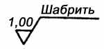

Шабреные поверхности
Содержание:
1. Сравнительные данные механически обработанных и шабреных поверхностей
Параметры
шероховатости шабреных поверхностей, имеющих специфический рельеф, и обозначение
на чертеже выбирают по табл. 1. В таблице указаны параметры шероховатости
шабреных поверхностей и соответствующие им параметры шероховатости
поверхностей, обработанных другими механическими способами.
Например, для направляющей, обработанной шлифованием, на чертеже указывают
шероховатость поверхности. Если направляющую такой же точности обрабатывать
шабрением, то по табл. 1 можно найти обозначение шероховатости, глубину
шабрения не более 6 мкм, 16 пятен. Таким образом, обозначение на чертеже
шабреной поверхности примерно на один параметр ниже, чем при каком-либо
механическом виде обработки.
1. Сравнительные данные механически обработанных и шабреных поверхностей
|
Параметр |
Обработка |
||
|
Обозначение |
Глубина |
Число |
|
|
0,160 |
До 2 |
32 |
|
|
0,32 |
До 3 |
25 |
|
|
0,63 |
 |
До 6 |
16 |
|
1,25 |
До 10 |
10 |
|
|
2,5 |
До 20 |
8 |
|